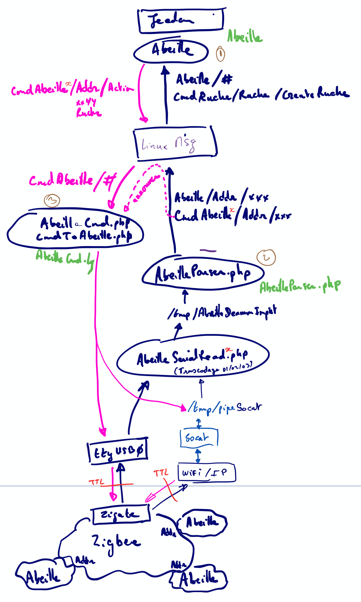

Developpement¶
Grandes lignes¶
- branche master : pour tous les développements en cours a condition que les pushs soient utilisables et « stabilisés » pour la phase de test.
- branche beta: pour figer un développement et le mettre en test avant de passer en stable
- branche stable: version stable
- Dev en cours: autre branche
Vue générale¶
Vue générale de la solution
Règles à suivre¶
- La structure des plugins est présentée dans la doc Jeedom: https://doc.jeedom.com/fr_FR/dev/plugin_template
- Si les informations ne sont pas disponibles nous prenons le plugin openzwave comme modèle.
- A noter: Un template est fourni par Jeedom: https://github.com/jeedom/plugin-template mais nous ne le prenons pas en compte.
Il faut que l’on se cale le plus possible sur ces documents.
Règles à suivre additionnelles pour Abeille¶
- Outils de dev: Visual Studio Code avec les paramètres par défaut.
- Git: garder le master toujours fonctionnel après un commit.
- Git: beaucoup de petit commit et souvent mais pas de gros commit pas souvent.
- Abeille / Core OS: Garder Abeille le plus loin possible de l’OS. Uniquement quand cela n’est pas possible faire du code spécifique.
- Abeille doit tourner sur une VM
- Abeille doit tourner sur un docker
- Abeille ne doit pas faire plus de 50Mo
- La doc n’est pas dans le github du plugin
- Pour éviter d’avoir deux personnes qui travaillent sur le meme sujet, nous utilisons les issues Github. Pour chaque dev que vous faites vous créé une issue et on vous l assigne. Une seule et unique personne assignée par issue.